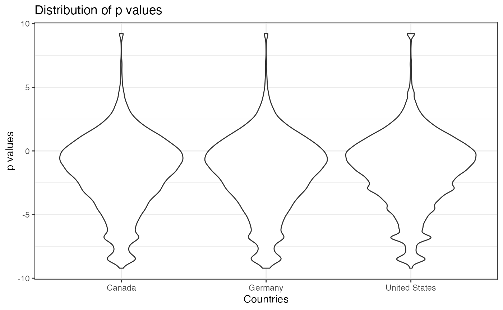
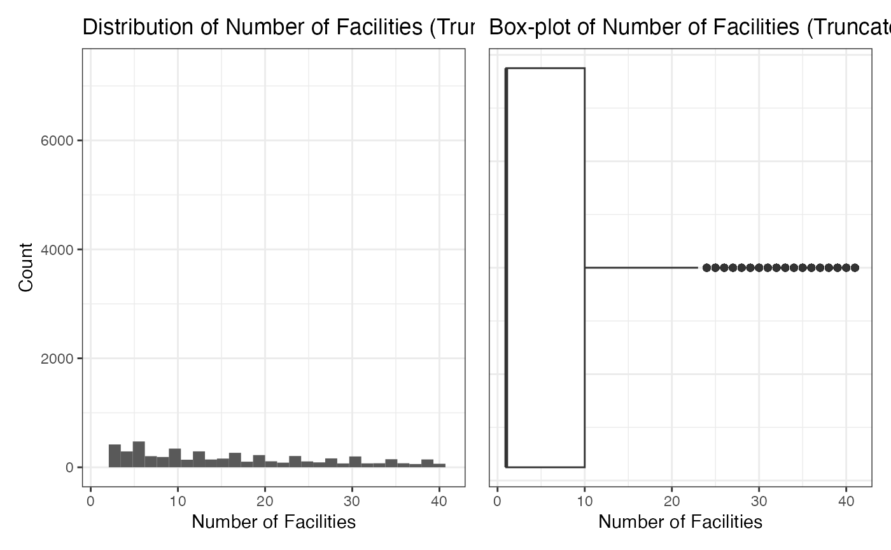

research-significance-analysis.RmdIn this project, our aim is two-fold: firstly, to explore the relationships between the significance of clinical trial outcomes and factors such as the countries where these trials are conducted and the number of facilities involved; and secondly, to investigate the evolution of clinical trial outcome significance over time.
Clinical trials are critical in shaping medical practices and policies and are the cornerstone for evaluating newly proposed medical methods. Conducting comprehensive clinical trials often requires ample funding and a broad sample base. Intuitively, one might hypothesize that more significant results often emerge from well-resourced hospitals or research centers in developed regions. To delve into this hypothesis and extend our inquiry, we utilize data from the Aggregate Analysis of ClinicalTrials.gov (AACT). This allows us to study not only how geographical locations and the scale of facilities might affect trial outcomes but also how the significance of these outcomes has evolved over time.
This extended scope of research is particularly pertinent in light of recent shifts in global health landscapes and the advent of new medical technologies and methodologies. By incorporating a time series analysis, we can identify trends and patterns in the data, offering a dynamic perspective on the impact of location and facility scale on clinical trial outcomes.
The insights derived from this comprehensive study could be instrumental for stakeholders in clinical research. Understanding the influence of location, collaboration level, and their changes over time—factors we consider as “surrogate” variables of research resources—empowers policy-makers to allocate funds and resources more effectively. This, in turn, ensures more reliable and generalizable results, leading to more informed regulatory decisions and improved health outcomes globally. Our study aims to contribute to this critical discourse by providing a nuanced and temporal understanding of factors influencing the efficacy of clinical trials.
In this project, our primary objective is to explore potential associations between the significance of clinical trial outcomes and various factors, including the countries where these trials are conducted and the number of facilities involved. To accomplish this, we have decided to employ a linear regression model as our analytical tool, using the p-values derived from each clinical trial as the response variable.
Furthermore, we aim to gain insights into the broader trends in the significance of clinical trial outcomes by conducting preliminary time series analysis. This will allow us to examine how the significance of these outcomes has evolved over time.
In the following analysis, we will use countries,
outcome_analyses and calculated_values tables
from AACT database. For convenience, we download them and save them as
.rda files in our bis620.2023 package.
library(bis620.2023)
library(lubridate)
#>
#> Attaching package: 'lubridate'
#> The following objects are masked from 'package:base':
#>
#> date, intersect, setdiff, union
library(dplyr)
#>
#> Attaching package: 'dplyr'
#> The following objects are masked from 'package:stats':
#>
#> filter, lag
#> The following objects are masked from 'package:base':
#>
#> intersect, setdiff, setequal, union
library(ggplot2)
library(purrr)
library(tidyr)
library(patchwork)
#> Warning: package 'patchwork' was built under R version 4.3.2
library(xts)
#> Warning: package 'xts' was built under R version 4.3.2
#> Loading required package: zoo
#> Warning: package 'zoo' was built under R version 4.3.2
#>
#> Attaching package: 'zoo'
#> The following objects are masked from 'package:base':
#>
#> as.Date, as.Date.numeric
#>
#> ######################### Warning from 'xts' package ##########################
#> # #
#> # The dplyr lag() function breaks how base R's lag() function is supposed to #
#> # work, which breaks lag(my_xts). Calls to lag(my_xts) that you type or #
#> # source() into this session won't work correctly. #
#> # #
#> # Use stats::lag() to make sure you're not using dplyr::lag(), or you can add #
#> # conflictRules('dplyr', exclude = 'lag') to your .Rprofile to stop #
#> # dplyr from breaking base R's lag() function. #
#> # #
#> # Code in packages is not affected. It's protected by R's namespace mechanism #
#> # Set `options(xts.warn_dplyr_breaks_lag = FALSE)` to suppress this warning. #
#> # #
#> ###############################################################################
#>
#> Attaching package: 'xts'
#> The following objects are masked from 'package:dplyr':
#>
#> first, lastThe table countries has 654,096 rows and 4 columns. The
name column indicates the countries where the trials are
conducted and the removed column indicates whether the
countries are from removed_countries table. In addition,
there are 81 missing values in the name column. There are
227 distinct countries in total. Furthermore, the number of
cross-countries clinical trials are 39,753.
countries
#> # A tibble: 654,096 × 4
#> id nct_id name removed
#> <dbl> <chr> <chr> <lgl>
#> 1 52996792 NCT04584346 United States FALSE
#> 2 52996793 NCT01079858 United States TRUE
#> 3 52865950 NCT02707549 Brazil FALSE
#> 4 52996794 NCT01081860 Netherlands FALSE
#> 5 52996795 NCT05124782 France FALSE
#> 6 52996796 NCT05039788 France FALSE
#> 7 52996797 NCT00118482 United States FALSE
#> 8 52996798 NCT00118482 Canada FALSE
#> 9 52996799 NCT03966950 Brazil FALSE
#> 10 52996800 NCT03755752 Egypt FALSE
#> # ℹ 654,086 more rows
countries |> group_by(nct_id) |> summarise(n = n()) |> filter(n >= 2) |> count()
#> # A tibble: 1 × 1
#> n
#> <int>
#> 1 39753The table outcome_analyses has 256,592 rows and 22
columns. In our project, we mainly consider the p_value
column. There are 45,622 missing values in the name
column.
outcome_analyses
#> # A tibble: 256,592 × 22
#> id nct_id outcome_id non_inferiority_type non_inferiority_descri…¹
#> <dbl> <chr> <dbl> <chr> <chr>
#> 1 18909128 NCT03989232 35195693 Superiority NA
#> 2 18909129 NCT03989232 35195693 Superiority NA
#> 3 19011925 NCT01860846 35422200 Superiority or Other NA
#> 4 18909130 NCT02584504 35195706 Superiority NA
#> 5 18909131 NCT02584504 35195706 Superiority NA
#> 6 18909132 NCT02584504 35195706 Other Statistical test was no…
#> 7 18909133 NCT02584504 35195707 Superiority NA
#> 8 18909134 NCT02584504 35195707 Superiority NA
#> 9 18909135 NCT02584504 35195708 Superiority NA
#> 10 18909136 NCT02584504 35195708 Superiority NA
#> # ℹ 256,582 more rows
#> # ℹ abbreviated name: ¹non_inferiority_description
#> # ℹ 17 more variables: param_type <chr>, param_value <dbl>,
#> # dispersion_type <chr>, dispersion_value <dbl>, p_value_modifier <chr>,
#> # p_value <dbl>, ci_n_sides <chr>, ci_percent <dbl>, ci_lower_limit <dbl>,
#> # ci_upper_limit <dbl>, ci_upper_limit_na_comment <chr>,
#> # p_value_description <chr>, method <chr>, method_description <chr>, …The table calculated_values has 467,212 rows and 19
columns. In our project, we mainly consider the
number_of_facilities, actual_duration,
has_us_facility columns. There are 50,012, 185,328, and
50012 missing values in the number_of_facilities,
actual_duration, has_us_facility columns
respectively. In addition, there are 166,148 trials with facilities from
USA.
calculated_values
#> # A tibble: 467,212 × 19
#> id nct_id number_of_facilities number_of_nsae_subjects
#> <dbl> <chr> <dbl> <dbl>
#> 1 275718269 NCT05354973 1 NA
#> 2 275739505 NCT04406233 1 NA
#> 3 275749805 NCT05064124 1 NA
#> 4 275833878 NCT05970133 1 NA
#> 5 276028358 NCT02661880 NA NA
#> 6 275772178 NCT05065788 1 NA
#> 7 275760496 NCT04926558 1 NA
#> 8 275751352 NCT04280367 1 NA
#> 9 275714902 NCT05289154 1 NA
#> 10 275758499 NCT04281927 1 NA
#> # ℹ 467,202 more rows
#> # ℹ 15 more variables: number_of_sae_subjects <dbl>,
#> # registered_in_calendar_year <dbl>, nlm_download_date <lgl>,
#> # actual_duration <dbl>, were_results_reported <lgl>,
#> # months_to_report_results <dbl>, has_us_facility <lgl>,
#> # has_single_facility <lgl>, minimum_age_num <dbl>, maximum_age_num <dbl>,
#> # minimum_age_unit <chr>, maximum_age_unit <chr>, …For countries table, we remove those rows with
removed == TRUE or name == NA. Although this
may bring some selection bias in our further analysis, it can reduce the
variance of our parameter estimation. For outcome_analyses
table, we remove those rows with p_value == NA. For
calculated_values, we remove those rows with
number_of_facilities == NA,
actual_duration == NA or
has_us_facility == NA. After cleaning, we have 619,635
valid rows for countries, 210,970 valid rows for
outcome_analyses and 258,619 valid rows for
calculated_values.
Next, we left join number_of_facilities and
countries on outcome_analyses. We choose
outcome_analyses as our target table because
p_value is our response variable. In addition, we drop
those countries with less than 10 clinical trials. After further
cleaning the NA value, we finalize a dataset with 746,903
rows. Some clinical trials may have many facilities from different
countries involved such as the NCT03989232. Thus the dataset has some
duplicate nct_id at this stage.
We conduct two stage cleaning above because we want to reduce the memory size in table joining process.
countries_processed <- countries |> filter(removed == FALSE & !is.na(name)) |> select(nct_id, name)
outcome_analyses_processed <- outcome_analyses |> filter(!is.na(p_value)) |> select(nct_id, p_value)
calculated_values_processed <- calculated_values |> filter(!is.na(number_of_facilities) & !is.na(actual_duration) & !is.na(has_us_facility)) |> select(nct_id, number_of_facilities, actual_duration, has_us_facility)
countries_processed |> count()
#> # A tibble: 1 × 1
#> n
#> <int>
#> 1 619635
outcome_analyses_processed |> count()
#> # A tibble: 1 × 1
#> n
#> <int>
#> 1 210970
calculated_values_processed |> count()
#> # A tibble: 1 × 1
#> n
#> <int>
#> 1 258619
d <- outcome_analyses_processed |> left_join(countries_processed, by="nct_id") |> left_join(calculated_values_processed, by="nct_id") |> filter(!is.na(name) & !is.na(number_of_facilities) & !is.na(actual_duration) & !is.na(has_us_facility)) |> filter(p_value >= 0 & p_value <= 1) |> distinct()
#> Warning in left_join(outcome_analyses_processed, countries_processed, by = "nct_id"): Detected an unexpected many-to-many relationship between `x` and `y`.
#> ℹ Row 1 of `x` matches multiple rows in `y`.
#> ℹ Row 509472 of `y` matches multiple rows in `x`.
#> ℹ If a many-to-many relationship is expected, set `relationship =
#> "many-to-many"` to silence this warning.
valid_countries <- d |> select(nct_id, name) |> distinct() |> group_by(name) |> summarise(n = n()) |> filter(n > 10) |> select(name) |> as.vector() |> unlist()
d <- d |> filter(name %in% valid_countries)
d
#> # A tibble: 746,903 × 6
#> nct_id p_value name number_of_facilities actual_duration has_us_facility
#> <chr> <dbl> <chr> <dbl> <dbl> <lgl>
#> 1 NCT039892… 0.0003 Unit… 129 15 TRUE
#> 2 NCT039892… 0.0003 Bulg… 129 15 TRUE
#> 3 NCT039892… 0.0003 Cana… 129 15 TRUE
#> 4 NCT039892… 0.0003 Czec… 129 15 TRUE
#> 5 NCT039892… 0.0003 Gree… 129 15 TRUE
#> 6 NCT039892… 0.0003 Hung… 129 15 TRUE
#> 7 NCT039892… 0.0003 Japan 129 15 TRUE
#> 8 NCT039892… 0.0003 Pola… 129 15 TRUE
#> 9 NCT039892… 0.0003 Puer… 129 15 TRUE
#> 10 NCT039892… 0.0003 Slov… 129 15 TRUE
#> # ℹ 746,893 more rowsFirst, we explore the distribution of p_value. This may
indicate further data transformation of p_value. Note that
the value of the p_value is bounded in [0, 1] and is skewed
to 0. For simplicity, we take a logit transformation on
p_value. We can see that after transformation, the shape of
the p.d.f. looks more like a normal distribution.
min_p <- d |> select(p_value) |> min()
max_p <- d |> select(p_value) |> max()
p1 <- d |> select(nct_id, p_value) |> distinct() |>
ggplot(aes(x = p_value)) +
geom_histogram(bins = 30) +
scale_x_continuous(limits = c(min_p, max_p)) +
theme_bw() +
ggtitle("Distribution of p values") +
xlab("p value") +
ylab("Count")
d <- d |> mutate(p_value = log((p_value) / (1 - p_value + 0.0001) + 0.0001))
min_p <- d |> select(p_value) |> min()
max_p <- d |> select(p_value) |> max()
p2 <- d |> select(nct_id, p_value) |> distinct() |>
ggplot(aes(x = p_value)) +
geom_histogram(bins = 30) +
scale_x_continuous(limits = c(min_p, max_p)) +
theme_bw() +
ggtitle("Distribution of p values (transformed)") +
xlab("transformed p values") +
ylab("Count")
p1 + p2
#> Warning: Removed 2 rows containing missing values (`geom_bar()`).
#> Warning: Removed 1 rows containing missing values (`geom_bar()`).Furthermore, we compare the distribution of p values of the trials conducted in the top 3 countries with most number of trials. From the three density plots, we do not see any differences among their distributions of the p values.
d |> select(nct_id, name) |> distinct() |> group_by(name) |> summarise(n = n()) |> arrange(desc(n))
#> # A tibble: 92 × 2
#> name n
#> <chr> <int>
#> 1 United States 12617
#> 2 Canada 3035
#> 3 Germany 3017
#> 4 United Kingdom 2581
#> 5 Spain 2427
#> 6 France 2235
#> 7 Italy 2137
#> 8 Poland 2107
#> 9 Australia 1720
#> 10 Russian Federation 1709
#> # ℹ 82 more rows
top_three <- c("United States", "Canada", "Germany")
p <- d |> filter(name %in% top_three) |> select(nct_id, p_value, name) |> distinct() |>
ggplot(aes(x = name, y = p_value)) +
geom_violin() +
theme_bw() +
ggtitle("Distribution of p values") +
xlab("Countries") +
ylab("p values")
p
We explore the distribution of number_of_facilities in
this section. The average value of it is 149.6227. Note that the
histogram and box-plot indicate that there may be some outliers in our
dataset. For further analysis, we use 3/4-quantile to truncate the
number_of_facilities. After truncation, the average value
of it is 16.94371.
mean(d$number_of_facilities)
#> [1] 149.6227
min_v <- d |> select(number_of_facilities) |> min()
max_v <- d |> select(number_of_facilities) |> max()
p1 <- d |> select(nct_id, number_of_facilities) |> distinct() |>
ggplot(aes(x = number_of_facilities)) +
geom_histogram(bins = 30) +
scale_x_continuous(limits = c(min_v, max_v)) +
theme_bw() +
ggtitle("Distribution of Number of Facilities") +
xlab("Number of Facilities") +
ylab("Count")
p2 <- d |> select(nct_id, number_of_facilities) |> distinct() |>
ggplot(aes(x = number_of_facilities)) +
geom_boxplot() +
theme_bw() +
ggtitle("Box-plot of Number of Facilities") +
xlab("Number of Facilities") +
theme(axis.text.y = element_blank(),
axis.ticks.y = element_blank())
p1 + p2
#> Warning: Removed 2 rows containing missing values (`geom_bar()`).
tmp <- d |> select(nct_id, number_of_facilities) |> distinct()
quantile_value <- quantile(tmp$number_of_facilities, 0.75)
d <- d |> filter(number_of_facilities <= quantile_value)
min_v <- d |> select(number_of_facilities) |> min()
max_v <- d |> select(number_of_facilities) |> max()
p1 <- d |> select(nct_id, number_of_facilities) |> distinct() |>
ggplot(aes(x = number_of_facilities)) +
geom_histogram(bins = 30) +
scale_x_continuous(limits = c(min_v, max_v)) +
theme_bw() +
ggtitle("Distribution of Number of Facilities (Truncated)") +
xlab("Number of Facilities") +
ylab("Count")
p2 <- d |> select(nct_id, number_of_facilities) |> distinct() |>
ggplot(aes(x = number_of_facilities)) +
geom_boxplot() +
theme_bw() +
ggtitle("Box-plot of Number of Facilities (Truncated)") +
xlab("Number of Facilities") +
theme(axis.text.y = element_blank(),
axis.ticks.y = element_blank())
p1 + p2
#> Warning: Removed 2 rows containing missing values (`geom_bar()`).
mean(d$number_of_facilities)
#> [1] 16.94371Similar to the number_of_facilities, we visualize the
distribution of actual_duration. The average value of it is
28.58358. Note that for actual_duration, all values look
within a reasonable range.
mean(d$actual_duration)
#> [1] 28.58358
min_v <- d |> select(actual_duration) |> min()
max_v <- d |> select(actual_duration) |> max()
p1 <- d |> select(nct_id, actual_duration) |> distinct() |>
ggplot(aes(x = actual_duration)) +
geom_histogram(bins = 30) +
scale_x_continuous(limits = c(min_v, max_v)) +
theme_bw() +
ggtitle("Distribution of Actual Duration") +
xlab("Actual Duration") +
ylab("Count")
p2 <- d |> select(nct_id, actual_duration) |> distinct() |>
ggplot(aes(x = actual_duration)) +
geom_boxplot() +
theme_bw() +
ggtitle("Box-plot of Actual Duration") +
xlab("Actual Duration") +
theme(axis.text.y = element_blank(),
axis.ticks.y = element_blank())
p1 + p2
#> Warning: Removed 2 rows containing missing values (`geom_bar()`).In this part, we first fit the p_value on all our
candidate variables and conduct t-test for each variable. First, we
generate the corresponding dummy variables and transform our dataset
d to the one without duplicate nct_id.
dummies_vars <- as_tibble(model.matrix(~ name - 1, d))
d_tmp <- bind_cols(d |> select(nct_id), dummies_vars) |> group_by(nct_id) |> summarise(across(where(is.numeric), sum, na.rm = TRUE))
#> Warning: There was 1 warning in `summarise()`.
#> ℹ In argument: `across(where(is.numeric), sum, na.rm = TRUE)`.
#> ℹ In group 1: `nct_id = "NCT00000378"`.
#> Caused by warning:
#> ! The `...` argument of `across()` is deprecated as of dplyr 1.1.0.
#> Supply arguments directly to `.fns` through an anonymous function instead.
#>
#> # Previously
#> across(a:b, mean, na.rm = TRUE)
#>
#> # Now
#> across(a:b, \(x) mean(x, na.rm = TRUE))
d <- d |> select(-name) |> distinct() |> group_by(nct_id) |> summarise(across(where(is.numeric), mean, na.rm = TRUE))
d <- d |> inner_join(d_tmp, by = "nct_id")
d
#> # A tibble: 12,314 × 96
#> nct_id p_value number_of_facilities actual_duration nameAlgeria nameArgentina
#> <chr> <dbl> <dbl> <dbl> <dbl> <dbl>
#> 1 NCT00… -2.94 1 59 0 0
#> 2 NCT00… -1.52 3 80 0 0
#> 3 NCT00… -2.24 7 118 0 0
#> 4 NCT00… -0.275 1 133 0 0
#> 5 NCT00… -4.94 1 163 0 0
#> 6 NCT00… -3.12 1 107 0 0
#> 7 NCT00… 0.0905 1 260 0 0
#> 8 NCT00… -3.50 14 220 0 0
#> 9 NCT00… -3.70 1 65 0 0
#> 10 NCT00… -1.13 1 110 0 0
#> # ℹ 12,304 more rows
#> # ℹ 90 more variables: nameAustralia <dbl>, nameAustria <dbl>,
#> # nameBangladesh <dbl>, nameBelarus <dbl>, nameBelgium <dbl>,
#> # `nameBosnia and Herzegovina` <dbl>, nameBotswana <dbl>, nameBrazil <dbl>,
#> # nameBulgaria <dbl>, nameCanada <dbl>, nameChile <dbl>, nameChina <dbl>,
#> # nameColombia <dbl>, `nameCosta Rica` <dbl>, nameCroatia <dbl>,
#> # nameCyprus <dbl>, `nameCzech Republic` <dbl>, nameCzechia <dbl>, …Next, we fit our full model. Given confidence level 95%, only
number_of_facilities, actual_duration,
nameAustria, nameBelgium,
nameChina, nameMoldova, Republic of,
nameUnited Kingdom and nameUnited States pass
the t test. For the countries variables, only nameAustria
has significantly negative coefficient, which indicates a lower p value
for their clinical trial outcomes. Before making further conclusions, we
fit another two partial models two separate the effect of
number_of_facilities and actual_duration.
model <- lm(p_value ~ ., data = d |> select(-nct_id))
summary(model)
#>
#> Call:
#> lm(formula = p_value ~ ., data = select(d, -nct_id))
#>
#> Residuals:
#> Min 1Q Median 3Q Max
#> -10.2553 -1.5664 0.0498 1.8425 12.9024
#>
#> Coefficients:
#> Estimate Std. Error t value
#> (Intercept) -2.873e+00 4.316e-02 -66.581
#> number_of_facilities -2.707e-02 2.464e-03 -10.985
#> actual_duration 1.344e-02 9.993e-04 13.454
#> nameAlgeria 2.414e-01 2.248e-01 1.074
#> nameArgentina -8.544e-03 2.064e-02 -0.414
#> nameAustralia 5.792e-03 1.038e-02 0.558
#> nameAustria -2.624e-02 1.187e-02 -2.210
#> nameBangladesh -8.698e-03 1.885e-01 -0.046
#> nameBelarus 1.681e-02 4.898e-02 0.343
#> nameBelgium 2.881e-02 1.410e-02 2.043
#> `nameBosnia and Herzegovina` 3.869e-03 9.183e-02 0.042
#> nameBotswana -2.280e-02 9.724e-02 -0.234
#> nameBrazil 2.628e-02 1.411e-02 1.863
#> nameBulgaria 1.573e-03 2.657e-02 0.059
#> nameCanada 5.967e-03 4.487e-03 1.330
#> nameChile 3.022e-03 2.727e-02 0.111
#> nameChina 2.999e-02 1.279e-02 2.346
#> nameColombia -1.089e-02 2.057e-02 -0.529
#> `nameCosta Rica` -4.681e-03 4.292e-02 -0.109
#> nameCroatia 1.990e-03 9.050e-03 0.220
#> nameCyprus 1.445e-01 1.557e-01 0.928
#> `nameCzech Republic` -3.895e-02 3.065e-02 -1.271
#> nameCzechia 2.559e-02 2.235e-02 1.145
#> nameDenmark -2.628e-03 1.391e-02 -0.189
#> `nameDominican Republic` -1.589e-01 1.704e-01 -0.932
#> nameEcuador 9.881e-03 9.609e-02 0.103
#> nameEgypt 5.919e-03 2.915e-02 0.203
#> nameEstonia 3.840e-02 4.400e-02 0.873
#> nameFinland 4.532e-02 3.076e-02 1.473
#> nameFrance -7.505e-03 9.874e-03 -0.760
#> nameGeorgia -5.313e-02 4.736e-02 -1.122
#> nameGermany 2.818e-03 5.994e-03 0.470
#> nameGreece 2.027e-02 2.164e-02 0.937
#> nameGuatemala -1.678e-02 5.549e-02 -0.302
#> nameHaiti 2.413e-01 2.050e-01 1.177
#> `nameHong Kong` -6.957e-05 3.018e-02 -0.002
#> nameHungary -3.725e-03 1.869e-02 -0.199
#> nameIceland 1.214e-01 1.748e-01 0.695
#> nameIndia -3.491e-03 1.843e-02 -0.189
#> nameIndonesia -1.056e-02 9.212e-02 -0.115
#> `nameIran, Islamic Republic of` 1.785e-01 1.391e-01 1.283
#> nameIreland 1.338e-02 3.951e-02 0.339
#> nameIsrael -1.217e-02 1.193e-02 -1.020
#> nameItaly 1.266e-02 9.431e-03 1.342
#> nameJapan 1.294e-02 7.830e-03 1.653
#> nameJordan -1.773e-02 4.252e-02 -0.417
#> nameKazakhstan 6.598e-03 7.885e-02 0.084
#> nameKenya 3.817e-02 7.049e-02 0.542
#> `nameKorea, Republic of` 8.068e-03 1.056e-02 0.764
#> nameKuwait 5.526e-02 7.828e-02 0.706
#> nameLatvia -1.127e-02 6.664e-02 -0.169
#> nameLebanon 5.590e-02 7.114e-02 0.786
#> nameLithuania 5.691e-03 3.912e-02 0.145
#> nameLuxembourg -6.581e-01 8.216e-01 -0.801
#> `nameMacedonia, The Former Yugoslav Republic of` 3.004e-01 4.264e-01 0.705
#> nameMalawi 4.080e-02 5.710e-02 0.715
#> nameMalaysia 1.386e-02 6.412e-02 0.216
#> nameMexico 9.785e-03 1.290e-02 0.758
#> `nameMoldova, Republic of` 2.352e-01 1.093e-01 2.152
#> nameMorocco -7.910e-02 2.063e-01 -0.383
#> nameNetherlands -6.693e-03 9.827e-03 -0.681
#> `nameNew Zealand` 2.036e-02 2.912e-02 0.699
#> `nameNorth Macedonia` 1.941e-02 9.497e-02 0.204
#> nameNorway -1.998e-02 2.363e-02 -0.846
#> namePakistan 6.040e-02 7.399e-02 0.816
#> namePanama 2.660e-03 5.706e-02 0.047
#> namePeru 3.660e-02 5.008e-02 0.731
#> namePhilippines -5.683e-02 6.326e-02 -0.898
#> namePoland 3.736e-03 9.163e-03 0.408
#> namePortugal 2.660e-02 3.419e-02 0.778
#> `namePuerto Rico` 1.614e-02 1.183e-02 1.364
#> nameRomania -1.839e-02 2.217e-02 -0.829
#> `nameRussian Federation` 8.823e-03 1.171e-02 0.753
#> `nameSaudi Arabia` 8.344e-02 1.214e-01 0.687
#> nameSerbia 5.787e-02 4.639e-02 1.247
#> nameSingapore 3.080e-02 3.825e-02 0.805
#> nameSlovakia -4.184e-03 3.397e-02 -0.123
#> nameSlovenia 2.996e-02 7.605e-02 0.394
#> `nameSouth Africa` 1.837e-02 2.665e-02 0.689
#> nameSpain 1.107e-02 9.287e-03 1.192
#> nameSweden 6.481e-03 1.112e-02 0.583
#> nameSwitzerland 4.311e-03 2.391e-02 0.180
#> nameTaiwan 7.672e-03 1.195e-02 0.642
#> nameTanzania -1.553e-02 6.980e-02 -0.223
#> nameThailand -8.678e-03 2.627e-02 -0.330
#> nameTunisia 8.345e-03 1.116e-01 0.075
#> nameTurkey 1.888e-02 1.957e-02 0.965
#> nameUganda 2.097e-02 6.041e-02 0.347
#> nameUkraine -6.853e-04 2.882e-02 -0.024
#> `nameUnited Arab Emirates` 1.170e-01 2.901e-01 0.403
#> `nameUnited Kingdom` 2.109e-02 7.119e-03 2.963
#> `nameUnited States` 2.158e-02 1.574e-03 13.714
#> nameVenezuela -4.952e-01 8.303e-01 -0.596
#> nameVietnam 3.185e-02 6.894e-02 0.462
#> nameZimbabwe -2.802e-04 6.457e-02 -0.004
#> Pr(>|t|)
#> (Intercept) < 2e-16 ***
#> number_of_facilities < 2e-16 ***
#> actual_duration < 2e-16 ***
#> nameAlgeria 0.28284
#> nameArgentina 0.67890
#> nameAustralia 0.57694
#> nameAustria 0.02713 *
#> nameBangladesh 0.96320
#> nameBelarus 0.73140
#> nameBelgium 0.04111 *
#> `nameBosnia and Herzegovina` 0.96639
#> nameBotswana 0.81460
#> nameBrazil 0.06251 .
#> nameBulgaria 0.95279
#> nameCanada 0.18360
#> nameChile 0.91175
#> nameChina 0.01900 *
#> nameColombia 0.59659
#> `nameCosta Rica` 0.91314
#> nameCroatia 0.82599
#> nameCyprus 0.35319
#> `nameCzech Republic` 0.20380
#> nameCzechia 0.25232
#> nameDenmark 0.85010
#> `nameDominican Republic` 0.35111
#> nameEcuador 0.91810
#> nameEgypt 0.83911
#> nameEstonia 0.38288
#> nameFinland 0.14067
#> nameFrance 0.44724
#> nameGeorgia 0.26201
#> nameGermany 0.63821
#> nameGreece 0.34895
#> nameGuatemala 0.76233
#> nameHaiti 0.23923
#> `nameHong Kong` 0.99816
#> nameHungary 0.84200
#> nameIceland 0.48728
#> nameIndia 0.84979
#> nameIndonesia 0.90876
#> `nameIran, Islamic Republic of` 0.19942
#> nameIreland 0.73487
#> nameIsrael 0.30792
#> nameItaly 0.17957
#> nameJapan 0.09843 .
#> nameJordan 0.67678
#> nameKazakhstan 0.93332
#> nameKenya 0.58813
#> `nameKorea, Republic of` 0.44479
#> nameKuwait 0.48023
#> nameLatvia 0.86574
#> nameLebanon 0.43201
#> nameLithuania 0.88434
#> nameLuxembourg 0.42317
#> `nameMacedonia, The Former Yugoslav Republic of` 0.48111
#> nameMalawi 0.47489
#> nameMalaysia 0.82881
#> nameMexico 0.44823
#> `nameMoldova, Republic of` 0.03139 *
#> nameMorocco 0.70141
#> nameNetherlands 0.49586
#> `nameNew Zealand` 0.48455
#> `nameNorth Macedonia` 0.83803
#> nameNorway 0.39770
#> namePakistan 0.41432
#> namePanama 0.96281
#> namePeru 0.46485
#> namePhilippines 0.36900
#> namePoland 0.68344
#> namePortugal 0.43667
#> `namePuerto Rico` 0.17255
#> nameRomania 0.40688
#> `nameRussian Federation` 0.45140
#> `nameSaudi Arabia` 0.49187
#> nameSerbia 0.21229
#> nameSingapore 0.42061
#> nameSlovakia 0.90197
#> nameSlovenia 0.69364
#> `nameSouth Africa` 0.49073
#> nameSpain 0.23309
#> nameSweden 0.55989
#> nameSwitzerland 0.85691
#> nameTaiwan 0.52098
#> nameTanzania 0.82388
#> nameThailand 0.74115
#> nameTunisia 0.94042
#> nameTurkey 0.33451
#> nameUganda 0.72852
#> nameUkraine 0.98103
#> `nameUnited Arab Emirates` 0.68676
#> `nameUnited Kingdom` 0.00305 **
#> `nameUnited States` < 2e-16 ***
#> nameVenezuela 0.55089
#> nameVietnam 0.64406
#> nameZimbabwe 0.99654
#> ---
#> Signif. codes: 0 '***' 0.001 '**' 0.01 '*' 0.05 '.' 0.1 ' ' 1
#>
#> Residual standard error: 2.725 on 12219 degrees of freedom
#> Multiple R-squared: 0.04701, Adjusted R-squared: 0.03968
#> F-statistic: 6.412 on 94 and 12219 DF, p-value: < 2.2e-16In this part, we fit a linear regression model with countries
variables only. Given confidence level 95%, only
nameMoldova, Republic of, nameUnited Kingdom
and nameUnited States pass the t test, and their
coefficients are all positive. This indicates that clinical trials with
the three countries involved tend to have less significant results.
model <- lm(p_value ~ ., data = d |> select(-c(nct_id, number_of_facilities, actual_duration)))
summary(model)
#>
#> Call:
#> lm(formula = p_value ~ ., data = select(d, -c(nct_id, number_of_facilities,
#> actual_duration)))
#>
#> Residuals:
#> Min 1Q Median 3Q Max
#> -10.1216 -1.5045 0.0533 1.8828 11.8813
#>
#> Coefficients:
#> Estimate Std. Error t value
#> (Intercept) -2.6575304 0.0267023 -99.524
#> nameAlgeria 0.2729223 0.2275650 1.199
#> nameArgentina -0.0151600 0.0208800 -0.726
#> nameAustralia 0.0045468 0.0105089 0.433
#> nameAustria -0.0213631 0.0120192 -1.777
#> nameBangladesh 0.0061462 0.1908762 0.032
#> nameBelarus 0.0207841 0.0495834 0.419
#> nameBelgium 0.0206072 0.0142602 1.445
#> `nameBosnia and Herzegovina` 0.0245003 0.0929363 0.264
#> nameBotswana -0.0328468 0.0984563 -0.334
#> nameBrazil 0.0238436 0.0142834 1.669
#> nameBulgaria -0.0036135 0.0268993 -0.134
#> nameCanada 0.0030186 0.0045328 0.666
#> nameChile 0.0124512 0.0275968 0.451
#> nameChina 0.0193260 0.0129257 1.495
#> nameColombia -0.0132468 0.0208267 -0.636
#> `nameCosta Rica` -0.0049055 0.0434354 -0.113
#> nameCroatia 0.0043798 0.0091617 0.478
#> nameCyprus 0.1382025 0.1576244 0.877
#> `nameCzech Republic` -0.0410269 0.0310340 -1.322
#> nameCzechia 0.0063121 0.0225677 0.280
#> nameDenmark -0.0017442 0.0140768 -0.124
#> `nameDominican Republic` -0.2341799 0.1724706 -1.358
#> nameEcuador 0.0299377 0.0972781 0.308
#> nameEgypt 0.0032042 0.0295137 0.109
#> nameEstonia 0.0288058 0.0445371 0.647
#> nameFinland 0.0344457 0.0311342 1.106
#> nameFrance -0.0123432 0.0099789 -1.237
#> nameGeorgia -0.0621068 0.0479523 -1.295
#> nameGermany -0.0010930 0.0060636 -0.180
#> nameGreece 0.0233831 0.0219108 1.067
#> nameGuatemala 0.0024375 0.0561745 0.043
#> nameHaiti 0.2619970 0.2075950 1.262
#> `nameHong Kong` 0.0003963 0.0305572 0.013
#> nameHungary -0.0053917 0.0189187 -0.285
#> nameIceland 0.0970170 0.1769994 0.548
#> nameIndia -0.0049800 0.0186588 -0.267
#> nameIndonesia -0.0226324 0.0932330 -0.243
#> `nameIran, Islamic Republic of` 0.1643384 0.1408250 1.167
#> nameIreland 0.0064312 0.0399899 0.161
#> nameIsrael -0.0120874 0.0120795 -1.001
#> nameItaly 0.0134360 0.0095439 1.408
#> nameJapan 0.0041791 0.0079047 0.529
#> nameJordan -0.0069699 0.0430459 -0.162
#> nameKazakhstan -0.0103377 0.0798312 -0.129
#> nameKenya 0.0416940 0.0713636 0.584
#> `nameKorea, Republic of` 0.0062995 0.0106895 0.589
#> nameKuwait 0.0613521 0.0792588 0.774
#> nameLatvia -0.0208627 0.0674682 -0.309
#> nameLebanon 0.0759941 0.0720186 1.055
#> nameLithuania 0.0050019 0.0396004 0.126
#> nameLuxembourg -0.6990662 0.8318914 -0.840
#> `nameMacedonia, The Former Yugoslav Republic of` 0.2168308 0.4317336 0.502
#> nameMalawi 0.0407385 0.0578087 0.705
#> nameMalaysia -0.0171446 0.0648589 -0.264
#> nameMexico 0.0096015 0.0130545 0.735
#> `nameMoldova, Republic of` 0.2251976 0.1106589 2.035
#> nameMorocco -0.1105291 0.2088263 -0.529
#> nameNetherlands -0.0059708 0.0099480 -0.600
#> `nameNew Zealand` 0.0145409 0.0294843 0.493
#> `nameNorth Macedonia` -0.0083804 0.0961456 -0.087
#> nameNorway -0.0130632 0.0239179 -0.546
#> namePakistan 0.0616187 0.0748913 0.823
#> namePanama -0.0198397 0.0577334 -0.344
#> namePeru 0.0236748 0.0506369 0.468
#> namePhilippines -0.0328219 0.0640272 -0.513
#> namePoland 0.0018468 0.0092756 0.199
#> namePortugal 0.0221948 0.0345885 0.642
#> `namePuerto Rico` 0.0109227 0.0119582 0.913
#> nameRomania -0.0155702 0.0224413 -0.694
#> `nameRussian Federation` 0.0037179 0.0118552 0.314
#> `nameSaudi Arabia` 0.0630058 0.1228955 0.513
#> nameSerbia 0.0463739 0.0469682 0.987
#> nameSingapore 0.0207023 0.0387084 0.535
#> nameSlovakia -0.0037549 0.0343904 -0.109
#> nameSlovenia 0.0094645 0.0769613 0.123
#> `nameSouth Africa` 0.0237061 0.0269691 0.879
#> nameSpain 0.0081707 0.0094012 0.869
#> nameSweden 0.0083554 0.0112518 0.743
#> nameSwitzerland 0.0100112 0.0242008 0.414
#> nameTaiwan 0.0122917 0.0120970 1.016
#> nameTanzania -0.0191265 0.0706692 -0.271
#> nameThailand -0.0097509 0.0265930 -0.367
#> nameTunisia -0.0095544 0.1130137 -0.085
#> nameTurkey 0.0155456 0.0198087 0.785
#> nameUganda 0.0268475 0.0611598 0.439
#> nameUkraine -0.0137367 0.0291602 -0.471
#> `nameUnited Arab Emirates` 0.1169409 0.2937237 0.398
#> `nameUnited Kingdom` 0.0205336 0.0072074 2.849
#> `nameUnited States` 0.0210469 0.0015931 13.211
#> nameVenezuela -0.6088499 0.8397060 -0.725
#> nameVietnam 0.0100481 0.0697670 0.144
#> nameZimbabwe 0.0016461 0.0653750 0.025
#> Pr(>|t|)
#> (Intercept) < 2e-16 ***
#> nameAlgeria 0.23043
#> nameArgentina 0.46782
#> nameAustralia 0.66527
#> nameAustria 0.07553 .
#> nameBangladesh 0.97431
#> nameBelarus 0.67510
#> nameBelgium 0.14846
#> `nameBosnia and Herzegovina` 0.79207
#> nameBotswana 0.73867
#> nameBrazil 0.09508 .
#> nameBulgaria 0.89314
#> nameCanada 0.50546
#> nameChile 0.65187
#> nameChina 0.13490
#> nameColombia 0.52476
#> `nameCosta Rica` 0.91008
#> nameCroatia 0.63262
#> nameCyprus 0.38062
#> `nameCzech Republic` 0.18619
#> nameCzechia 0.77971
#> nameDenmark 0.90139
#> `nameDominican Republic` 0.17455
#> nameEcuador 0.75827
#> nameEgypt 0.91355
#> nameEstonia 0.51779
#> nameFinland 0.26859
#> nameFrance 0.21614
#> nameGeorgia 0.19528
#> nameGermany 0.85696
#> nameGreece 0.28590
#> nameGuatemala 0.96539
#> nameHaiti 0.20695
#> `nameHong Kong` 0.98965
#> nameHungary 0.77566
#> nameIceland 0.58362
#> nameIndia 0.78955
#> nameIndonesia 0.80820
#> `nameIran, Islamic Republic of` 0.24325
#> nameIreland 0.87224
#> nameIsrael 0.31701
#> nameItaly 0.15922
#> nameJapan 0.59703
#> nameJordan 0.87137
#> nameKazakhstan 0.89697
#> nameKenya 0.55906
#> `nameKorea, Republic of` 0.55566
#> nameKuwait 0.43890
#> nameLatvia 0.75716
#> nameLebanon 0.29135
#> nameLithuania 0.89949
#> nameLuxembourg 0.40074
#> `nameMacedonia, The Former Yugoslav Republic of` 0.61551
#> nameMalawi 0.48100
#> nameMalaysia 0.79152
#> nameMexico 0.46205
#> `nameMoldova, Republic of` 0.04187 *
#> nameMorocco 0.59662
#> nameNetherlands 0.54839
#> `nameNew Zealand` 0.62190
#> `nameNorth Macedonia` 0.93054
#> nameNorway 0.58496
#> namePakistan 0.41065
#> namePanama 0.73112
#> namePeru 0.64012
#> namePhilippines 0.60822
#> namePoland 0.84219
#> namePortugal 0.52109
#> `namePuerto Rico` 0.36105
#> nameRomania 0.48781
#> `nameRussian Federation` 0.75383
#> `nameSaudi Arabia` 0.60819
#> nameSerbia 0.32349
#> nameSingapore 0.59278
#> nameSlovakia 0.91306
#> nameSlovenia 0.90213
#> `nameSouth Africa` 0.37941
#> nameSpain 0.38480
#> nameSweden 0.45775
#> nameSwitzerland 0.67912
#> nameTaiwan 0.30960
#> nameTanzania 0.78667
#> nameThailand 0.71387
#> nameTunisia 0.93263
#> nameTurkey 0.43259
#> nameUganda 0.66069
#> nameUkraine 0.63759
#> `nameUnited Arab Emirates` 0.69054
#> `nameUnited Kingdom` 0.00439 **
#> `nameUnited States` < 2e-16 ***
#> nameVenezuela 0.46842
#> nameVietnam 0.88548
#> nameZimbabwe 0.97991
#> ---
#> Signif. codes: 0 '***' 0.001 '**' 0.01 '*' 0.05 '.' 0.1 ' ' 1
#>
#> Residual standard error: 2.759 on 12221 degrees of freedom
#> Multiple R-squared: 0.02288, Adjusted R-squared: 0.01552
#> F-statistic: 3.11 on 92 and 12221 DF, p-value: < 2.2e-16In this part, we fit a model with no countries variable. From the summary table, we can see that the result is consistent with our full model. The result indicates that the clinical trials with more facilities involved and with shorter actual duration tend to generate significant outcomes.
model <- lm(p_value ~ ., data = d |> select(p_value, number_of_facilities, actual_duration))
summary(model)
#>
#> Call:
#> lm(formula = p_value ~ ., data = select(d, p_value, number_of_facilities,
#> actual_duration))
#>
#> Residuals:
#> Min 1Q Median 3Q Max
#> -7.9312 -1.5454 0.1339 1.9284 12.4981
#>
#> Coefficients:
#> Estimate Std. Error t value Pr(>|t|)
#> (Intercept) -2.758609 0.042723 -64.569 < 2e-16 ***
#> number_of_facilities -0.018848 0.002361 -7.981 1.57e-15 ***
#> actual_duration 0.013362 0.001005 13.299 < 2e-16 ***
#> ---
#> Signif. codes: 0 '***' 0.001 '**' 0.01 '*' 0.05 '.' 0.1 ' ' 1
#>
#> Residual standard error: 2.753 on 12311 degrees of freedom
#> Multiple R-squared: 0.01954, Adjusted R-squared: 0.01938
#> F-statistic: 122.7 on 2 and 12311 DF, p-value: < 2.2e-16In this section, we delve into the time series analysis of our dataset. Our focus is to understand the trends and patterns over time in the clinical trial data.
data(studies_all)The first step involves loading the dataset studies_all.
This dataset contains comprehensive information about various clinical
trials, especially the time information, which is crucial for our
analysis.
studies_all_selected <- select(studies_all, nct_id, last_update_submitted_qc_date)
# Perform the inner join with d
d_longitudinal <- inner_join(d, studies_all_selected, by = "nct_id")Here, we select the necessary columns from studies_all,
specifically nct_id and ‘last_update_submitted_qc_date’.
Note that ‘last_update_submitted_qc_date’ contains the date when the
last update or modification to a clinical trial’s data or documentation
was submitted for quality control (QC) review or assessment. It
signifies a crucial timestamp in the clinical trial management process,
indicating when the trial’s records were last revised and prepared for
quality assurance checks. We then perform an inner join with another
dataset ‘d’. We aim to merge relevant data from both datasets based on
the nct_id, which is the unique identifier for each
clinical trial. Now we will get time information for each study.
We then check for missing values in our merged dataset,
d_longitudinal. The above code checks for any NA (Not
Available) values in the dataset.
d_longitudinal
#> # A tibble: 12,314 × 97
#> nct_id p_value number_of_facilities actual_duration nameAlgeria nameArgentina
#> <chr> <dbl> <dbl> <dbl> <dbl> <dbl>
#> 1 NCT00… -2.94 1 59 0 0
#> 2 NCT00… -1.52 3 80 0 0
#> 3 NCT00… -2.24 7 118 0 0
#> 4 NCT00… -0.275 1 133 0 0
#> 5 NCT00… -4.94 1 163 0 0
#> 6 NCT00… -3.12 1 107 0 0
#> 7 NCT00… 0.0905 1 260 0 0
#> 8 NCT00… -3.50 14 220 0 0
#> 9 NCT00… -3.70 1 65 0 0
#> 10 NCT00… -1.13 1 110 0 0
#> # ℹ 12,304 more rows
#> # ℹ 91 more variables: nameAustralia <dbl>, nameAustria <dbl>,
#> # nameBangladesh <dbl>, nameBelarus <dbl>, nameBelgium <dbl>,
#> # `nameBosnia and Herzegovina` <dbl>, nameBotswana <dbl>, nameBrazil <dbl>,
#> # nameBulgaria <dbl>, nameCanada <dbl>, nameChile <dbl>, nameChina <dbl>,
#> # nameColombia <dbl>, `nameCosta Rica` <dbl>, nameCroatia <dbl>,
#> # nameCyprus <dbl>, `nameCzech Republic` <dbl>, nameCzechia <dbl>, …The final step in our data preparation involves recovering the p_value column to the original value without any transformation. We apply a mathematical transformation to the p-values, converting them into their original scale. This step is crucial for making our subsequent statistical analysis more interpretable and meaningful.
In our analysis, we first converted ‘last_update_submitted_qc_date’
into a datetime format, essential for accurate time-series examination.
Following this, we plotted the original_p_value against
time to visually identify any significant trends. Our approach involved
using a linear regression model, with time as our independent variable
and original_p_value as the dependent one.
# Convert dates to numerical values
d_longitudinal$last_update_submitted_qc_date <- as.Date(d_longitudinal$last_update_submitted_qc_date)
d_longitudinal$days_since_first <- as.numeric(d_longitudinal$last_update_submitted_qc_date - min(d_longitudinal$last_update_submitted_qc_date))
# Fit linear model
model <- lm(original_p_value ~ days_since_first, data = d_longitudinal)
# Summary of the model
summary(model)
#>
#> Call:
#> lm(formula = original_p_value ~ days_since_first, data = d_longitudinal)
#>
#> Residuals:
#> Min 1Q Median 3Q Max
#> -0.2475 -0.1942 -0.1274 0.1478 0.8274
#>
#> Coefficients:
#> Estimate Std. Error t value Pr(>|t|)
#> (Intercept) 1.643e-01 7.151e-03 22.972 < 2e-16 ***
#> days_since_first 1.528e-05 1.893e-06 8.072 7.55e-16 ***
#> ---
#> Signif. codes: 0 '***' 0.001 '**' 0.01 '*' 0.05 '.' 0.1 ' ' 1
#>
#> Residual standard error: 0.2579 on 12312 degrees of freedom
#> Multiple R-squared: 0.005264, Adjusted R-squared: 0.005184
#> F-statistic: 65.16 on 1 and 12312 DF, p-value: 7.554e-16
# To plot the original_p_value over time
ggplot(d_longitudinal, aes(x = last_update_submitted_qc_date, y = original_p_value)) +
geom_point(aes(color = "Original P-Value"), size = 2, alpha = 0.5) +
geom_smooth(method = "lm", formula = y ~ x, color = "red", se = FALSE) +
labs(x = "Date", y = "Original P-Value",
title = "Original P-Value Over Time") +
scale_color_manual(values = c("Original P-Value" = "blue")) +
theme_minimal()This model revealed a small yet statistically significant trend: a
gradual increase in the original_p_value over time. It’s
important to note that the increase is modest, largely due to the
inherently small size of the p-value. The exceptionally low p-value for
the slope, significantly under \(0.05\), validates the trend’s statistical
significance. However, the low coefficient of determination suggests
that time only explains a minor part of the variance in the
original_p_value. In summary, our analysis indicates a
discernible, though minor, upward trend in the
original_p_value over time. This trend, while statistically
valid, contributes to only a small portion of the observed changes in
our dataset.
This gradual increase in the original_p_value over time
suggests that the studies we from 2010 to 2022 are showing a trend
towards less statistically significant results as time progresses. This
could imply a range of possibilities, such as changes in research
methodology, variations in study quality, or shifts in the underlying
phenomena being studied. It’s a crucial insight for researchers and
policy makers, as it highlights the need for a closer examination of why
these changes are occurring. Understanding this trend could lead to more
robust research practices and better-informed decision-making in the
future.
Then we plot the decomposed components of our time series data,
several insights emerge, further enhancing our understanding of the
original_p_value trends over time.
d_longitudinal$last_update_submitted_qc_date <- ymd(d_longitudinal$last_update_submitted_qc_date)
d_longitudinal <- d_longitudinal %>% arrange(last_update_submitted_qc_date)
# Group data by month and calculate the mean of `original_p_value`
monthly_data <- d_longitudinal %>%
group_by(month = floor_date(last_update_submitted_qc_date, "month")) %>%
summarize(original_p_value = mean(original_p_value, na.rm = TRUE))
# Convert to xts for decomposition
ts_data <- ts(monthly_data$original_p_value, frequency = 12)
# Decompose the time series (additive model)
decomposed_data <- decompose(ts_data, type = "additive")
# Plot the decomposed components
plot(decomposed_data)Trend Component Analysis: The trend component of the
graph, which represents the long-term movement in the
original_p_value, shows a small positive slope. This aligns
with our earlier findings of a gradual increase in the p-value over
time. The consistent yet modest upward trend in the p-values suggests a
decrease in the statistical significance of the studies over the
examined period. This could be indicative of evolving research dynamics,
such as changes in research methodologies or variations in the domains
being studied.
Seasonal Component Insights: The seasonal component of the data reveals calendar-related fluctuations in the p-values. The volatility observed here is particularly intriguing. It suggests that there are specific times of the year when the studies tend to yield results with varying levels of significance. This could be due to a variety of factors, including cyclical research funding, academic calendars, or even seasonal variations in the phenomena being studied.
Random Component (Noise) Considerations: The random component, which shows the residual fluctuations after accounting for trend and seasonal effects, appears erratic. This erratic nature indicates that there are additional factors influencing the p-values that our model has not accounted for. These could range from unforeseen external events impacting research outcomes to inherent randomness in the data collection processes.
In this project, we aim to answer the question whether there are
significant relations between the significance of the outcomes of
clinical trials and factors such as countries that the trials are
conducted and the number of facility involved. We conduct rich
exploratory data analysis on our AACT dataset. The distribution of p
value of the clinical trials is skewed toward 0, indicating that most
clinical trials complete with a significant outcomes.In addition, our
analysis on number_of_facilities indicates that the
clinical trials have about 7 to 8 facilities involved on average. This
also show the trend of collaboration in clinical trials. Furthermore, we
fit three linear regression models and find that only United Kingdom and
United States two countries have significant impact on the p values of
clinical trials outcome and the clinical trials with the two countries
involved tend to have less significant p values. Since the two countries
get involve with a large portion of clinical trials, we interpret this
result that it implies the fact that scientific discovery is a difficult
process and tend to complete with a non-significant outcome. In
addition, our model on number_of_facilities indicates that
more collaboration can accelerate the process of scientific discovery.
Thus there is not much significant relations between the significance of
the outcomes of clinical trials and countries that the trials are
conducted. But there is relations between the significance of the
outcomes and the number of facility involved.
In addition to our primary findings, our time series analysis using a
linear regression model unveiled a noteworthy trend: a gradual increase
in original_p_value over time. This trend, while
statistically significant with a p-value for the slope below 0.05,
displayed a relatively modest effect size, as indicated by the low
coefficient of determination. This observed trend implies several
potential contributing factors, including shifts in research
methodologies, variations in study quality, or changes in the phenomena
under examination. These findings emphasize the importance of conducting
further investigations to delve into the underlying causes, providing
valuable insights for both researchers and policymakers. Furthermore,
when we dissected the time series data, we gained additional insights.
The trend component consistently exhibited a slight positive slope,
reinforcing the notion of diminishing statistical significance over
time. The seasonal component highlighted fluctuations in p-values linked
to specific times of the year, potentially influenced by factors like
research funding cycles, academic calendars, or seasonal variations in
the phenomena being studied. Lastly, the random component pointed to
erratic fluctuations, suggesting the presence of unaccounted factors
impacting p-values, ranging from unforeseen external events to inherent
variability in data collection practices.